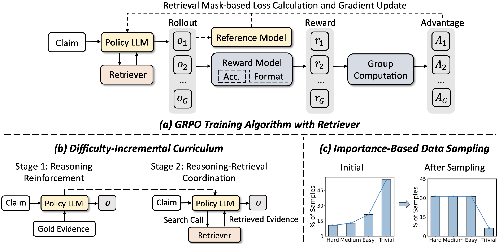
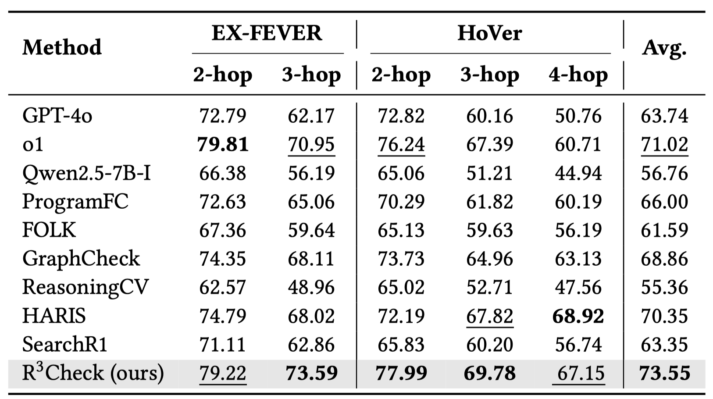
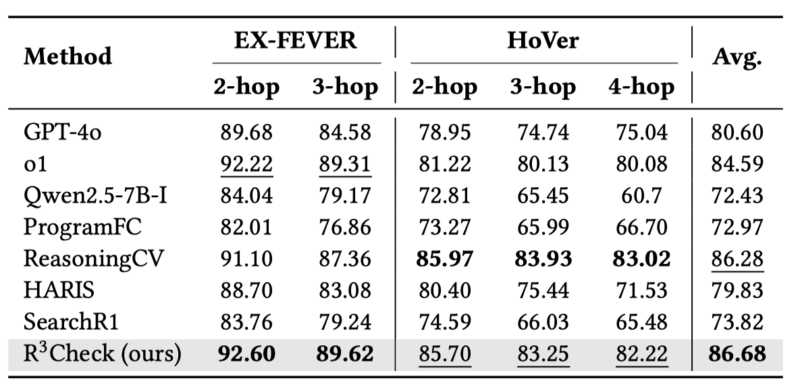

Abstract
Automated fact-checking aims to verify the veracity of claims based on related evidence, and has become increasingly important as large language models (LLMs) make it easier to generate and disseminate misinformation at scale. In open settings, effective fact-checking requires models to iteratively retrieve relevant evidence and reason over noisy and incomplete information. While recent LLMbased approaches have shown promising reasoning capabilities, prompt-based methods remain limited by the inherent behaviors of base LLMs, and supervised fine-tuning methods typically require costly annotated reasoning trajectories. In this paper, we propose R3Check, a rule-guided reinforcement learning framework that enables LLMs to perform iterative retrieval–reasoning for multi-hop fact-checking. R3Check formulates the retriever as an external environment and optimizes the model using Group Relative Policy Optimization, relying only on final veracity labels and format-based rewards rather than explicit reasoning annotations. To mitigate the mutual interference between retrieval and reasoning that arises under joint training, we introduce a two-stage curriculum that first trains structured reasoning under closed fact-checking with gold evidence, and then jointly optimizes retrieval and reasoning with real-time retrieval. An importance-based sampling strategy further strengthens effective supervision signals during training. Despite using only a 7B backbone, R3Check outperforms existing baselines and even powerful reasoning LLMs, under both given-evidence and real-time retrieval settings, while producing interpretable reasoning chains. This work demonstrates the potential of pure reinforcement learning to induce effective retrieval–reasoning behaviors for factchecking under weak supervision.
 Framework
Framework

Overview of the R3Check training framework. (a) illustrates how the GRPO-based reinforcement learning algorithm optimizes the model's ability in interleaved reasoning and retrieval. (b) introduces the two-stage difficulty-incremental curriculum training that sequentially strengthens the model in reasoning and then reasoning–retrieval coordination. (c) shows the training data distribution across different levels of difficulty before and after applying importance-based bucket sampling.
 Performance
Performance
⭐️ Open Fact Checking

⭐️ Closed Fact Checking
